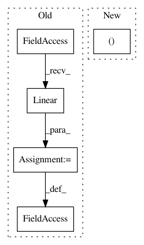

675550f7a7a592076efd65dcd40698407d7f779e,experiments/toy_shapenet/c11.py,CNN,__init__,#CNN#Any#,48
Before Change
self.convolutions.append(conv)
self.bn_out = nn.BatchNorm1d(features[-1][0], affine=True)
self.linear = torch.nn.Linear(features[-1][0], number_of_classes)
def forward(self, x): // pylint: disable=W
"""
:param x: [batch, features, x, y, z]
After Change
(10, 5), // 32
(10, 5), // 16
(12, 6), // 16
(12, 6), // 8
(14, 7), // 8
(number_of_classes, 0)] // 4
In pattern: SUPERPATTERN
Frequency: 3
Non-data size: 5
Instances
Project Name: mariogeiger/se3cnn
Commit Name: 675550f7a7a592076efd65dcd40698407d7f779e
Time: 2017-08-17
Author: geiger.mario@gmail.com
File Name: experiments/toy_shapenet/c11.py
Class Name: CNN
Method Name: __init__
Project Name: dpressel/mead-baseline
Commit Name: c9b49a42f4ccdd3de935b1dbbe9c86ae153c6012
Time: 2018-09-26
Author: dpressel@gmail.com
File Name: python/baseline/pytorch/seq2seq/model.py
Class Name: Seq2SeqModel
Method Name: __init__
Project Name: chainer/chainerrl
Commit Name: a259206bb10914d7d6240b2d1efc2e90b37cc9f7
Time: 2017-08-15
Author: kataoka@preferred.jp
File Name: chainerrl/policies/gaussian_policy.py
Class Name: FCGaussianPolicyWithStateIndependentCovariance
Method Name: __init__